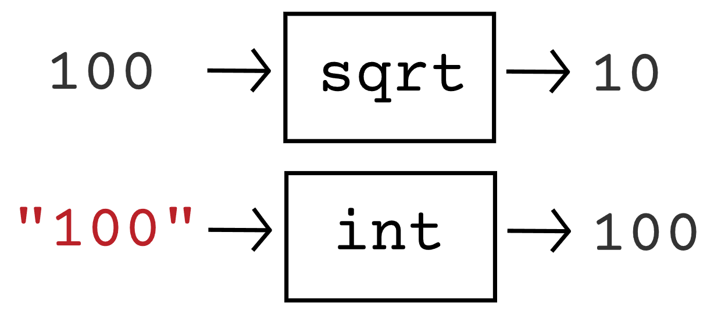
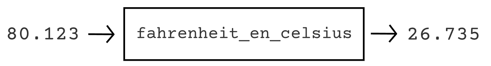

Fonctions#
Qu'est-ce qu'une fonction ?#
Nous avons déjà mentionné plusieurs fois le mot fonction dans ce cours, notamment avec print() et input(), mais aussi avec int(), float(), sqrt(), et randint(). De notre point de vue, nous avons utilisé ces fonctions comme des sortes de boîtes noires dans lesquelles nous avons envoyé une valeur (entre les parenthèses) pour, parfois, en recevoir une autre en retour. La figure suivante schématise ce qu'il se passe lorsque l'on exécute le code ci-dessous.
from math import *
x = sqrt(100)
y = int("100")

Nous ne savons en effet pas vraiment quelles opérations sont exécutées lorsque l'on fait appel à ces fonctions. Tout ce que l'on sait, c'est que l'on donne une certaine valeur à sqrt() et que celle-ci nous retourne sa racine carrée. De même pour int(), à laquelle on donne une certaine valeur et qui nous la retourne convertie en nombre entier. Derrière ces fonctions se cachent pourtant de nombreuses lignes de code écrites par d'autres programmeur.euses permettant de réaliser ces opérations. Toutefois, il est bien plus pratique et lisible de simplement écrire sqrt() ou int() que de recopier un algorithme complexe à chaque fois que l'on veut effectuer une racine carrée ou une conversion en nombre entier.\ Cela constitue l'intérêt principal des fonctions et on peut ainsi en utiliser de nombreuses provenant directement de Python ou de modules que l'on télécharge et importe dans notre programme. Dans ce chapitre, nous allons voir comment vous pouvez vous-même créer vos propres fonctions.
Définir une fonction#
Comme première fonction, nous allons simplement en créer une nommée saluer(), ne prenant rien entre ses parenthèses, et permettant d'afficher des textes de salutation. Pour définir une fonction, il faut utiliser le mot-clef def et le faire suivre du nom qu'on souhaite lui donner ainsi que d'une paire de parenthèses. Comme souvent en Python, cette ligne doit se terminer par deux-points. Finalement, le bloc d'instructions à exécuter lorsque l'on appelle la fonction, nommé corps de la fonction, est indenté en dessous de la ligne de définition. Ainsi, la fonction saluer() peut-être définie de la manière suivante :
def saluer():
print("Bonjour")
print("Comment allez-vous ?")
Que se passe-t-il lorsque vous exécutez ce programme ? Pour le moment, absolument rien. En effet, celui-ci permet uniquement de définir ce que fait la fonction saluer(). Si on veut afficher le texte de salutation, il faut alors utiliser cette fonction. Cela est très simple, il suffit d'écrire le nom de la fonction suivi d'une paire de parenthèse. Ainsi, le programme suivant permet d'afficher trois fois les messages de salutation.
def saluer():
print("Bonjour")
print("Comment allez-vous ?")
saluer()
saluer()
saluer()
Définir une fonction avec paramètres#
Les fonctions que nous avons utilisées dans les précédents chapitres prenaient toutes au moins une valeur entre leurs parenthèses. On appelle ces valeurs des paramètres. Ainsi, on pourrait ajouter un paramètre à notre fonction, de manière que l'on puisse ensuite écrire par exemple saluer("Maxime") ou saluer("Caroline") de manière que cette fonction salue à chaque fois un prénom différent.\ Pour ce faire, on doit indiquer au moment de définir la fonction que celle-ci attend un paramètre. Sur la ligne du def, on doit alors mettre le nom que l'on veut donner au paramètre entre la paire de parenthèses. Un paramètre est en fait une variable, à la différence que celle-ci tient sa valeur de l'appel à la fonction, et qu'elle n'est utilisable que dans le corps de celle-ci. Le programme devient donc comme suit pour afficher trois messages de salutation personnalisés.
def saluer(prenom):
print("Bonjour", prenom)
print("Comment allez-vous ?")
saluer("Maxime")
saluer("Caroline")
saluer("Iliya")
Au début du programme, la ligne saluer("Maxime") est exécutée. L'exécution saute alors à la ligne de définition de cette fonction et la valeur"Maxime" est attribuée à la variable prenom. L'exécution du corps de la fonction peut ensuite commencer, et le premier message affiché sera bien Bonjour Maxime. Quand cette fonction est terminée, l'exécution saute cette fois à la ligne salut("Caroline"), qui la ramène immédiatement à la ligne de la définition de saluer() pour attribuer la valeur "Caroline" à prenom. Ainsi de suite, le paramètre prend différentes valeurs, et la fonction est exécutée en fonction de cette valeur.\ Il est également possible de définir une fonction avec plusieurs paramètres. Dans ce cas, les noms des différents paramètres doivent être séparés par des virgules entre les parenthèses de la ligne de définition. Lors de l'utilisation de la fonction, les valeurs doivent également être séparées par des virgules et celles-ci sont attribuées aux paramètres dans le même ordre. Dans le programme suivant, la fonction quiz() permet de poser une question à l'utilisateur, et de contrôler si sa réponse (un nombre) est correcte ou non. Il devient alors facile de créer un quiz en utilisant la fonction quiz() et en lui donnant la question comme premier argument, et la bonne réponse comme deuxième argument.
def quiz(question, bonne_reponse):
reponse_joueur = int(input(question))
if bonne_reponse == reponse_joueur:
print("Bonne réponse")
else:
print("Mauvaise réponse")
quiz("Combien il y a-t-il de cantons en Suisse ?", 26)
quiz("En quelle année Donald Trump est-il devenu président des USA ?", 2016)
quiz("Quel est le résultat de 2*(5+4)", 18)
Passage par valeur#
Comme nous l'avons déjà fait avec la fonction print(), il est tout à fait possible de mettre des variables ou des expressions au lieu de valeurs littérales entre les parenthèses d'un appel de fonction. Dans ce cas, l'expression est tout d'abord évaluée, et son résultat est transmis au paramètre. Ainsi, le programme ci-dessous est tout à fait valide et affichera Majeur Mineur Mineur.
def affiche_mineur_majeur(age):
if age >= 18:
print("Majeur")
else:
print("Mineur")
affiche_mineur_majeur(20)
n = 7
affiche_mineur_majeur(n)
affiche_mineur_majeur( (n + 1) * 2 )
Il faut toutefois faire attention à un détail. Lorsque, par exemple, la ligne affiche_mineur_majeur(n) est exécutée, la valeur de n est copiée dans la variable age. Ainsi, une modification de age dans le corps de la fonction ne peut avoir aucun impact sur la valeur de n. On appelle cela un passage par valeur et ce concept s'illustre bien dans le programme suivant qui affiche simplement 3 fois le nombre 20.
def affiche_double(x):
x *= 2
print(x)
n = 10
affiche_double(n)
affiche_double(n)
affiche_double(n)
Définir une fonction avec valeur de retour#
Dans le schéma présenté au début de ce chapitre, nous avions représenté une fonction comme une boîte noire à laquelle nous donnions une (ou plusieurs) valeur(s), et qui nous en retournait une autre. Pour l'instant, nous avons appris à définir une fonction avec un corps, ce qui correspond à la boîte noire. De plus, nous avons appris à ajouter des paramètres à la fonction, ce qui correspond aux valeurs entrant dans la boîte. Nous n'avons toutefois pas encore abordé la valeur qui sort de la boîte, que l'on appelle valeur de retour.
Pour créer notre première fonction avec valeur de retour, reprenons l'idée du programme convertissant des degrés Fahrenheit en degrés Celsius que vous avez développé dans un exercice précédent. Il s'agit d'un cas typique pour lequel nous aimerions définir une fonction. En effet, dans un plus gros programme, plutôt que de réécrire l'algorithme de conversion à chaque fois que vous en avez besoin, il serait plus aisé de simplement utiliser une fonction farhenheit_en_celsius(). Pour une valeur de 80.123 degrés Fahrenheit, cette fonction se schématiserait ainsi :

Pour implémenter cette valeur de retour en Python, il faut utiliser mot-clef return suivi de la valeur à retourner. Lorsque le programme rencontre un return, l'exécution de la fonction se termine et la valeur qui suit est retournée au programme. Ainsi, en se souvenant que l'on peut convertir une température en Fahrenheit \(F\) en Celsius \(C\) avec la formule \(C = \frac{F - 32}{1.8}\), notre fonction peut se définir comme suit.
def celsius_en_fahrenheit(F):
C = (F - 32) / 1.8
return C
On peut ensuite utiliser cette fonction de plusieurs manières pour effectuer les conversions souhaitées. Prenez le temps de bien étudier tous de cas d'utilisation suivants.
def celsius_en_fahrenheit(F):
C = (F - 32) / 1.8
return C
temp_celsius = 0
temp_fahrenheit = celsius_en_fahrenheit(temp_celsius)
print(temp_celsius, "°C équivaut à", temp_fahrenheit, "°F")
moyenne = ( celsius_en_fahrenheit(20) + celsius_en_fahrenhei(30) ) / 2
print("La moyenne en Fahrenheit de 20°C et 30°C est de", moyenne)
print("En Fahrenheit, 220°C vaut", celsius_en_fahrenheit(220))
Exercices#
Exercice 1#
Définissez une fonction nommée affiche_sourire qui affiche simplement :) lorsqu'elle est appelée. Appelez une fois votre fonction pour vérifier votre solution.
Solution
def affiche_sourire():
print(":)")
affiche_sourire()
Exercice 2#
Définissez une fonction nommée
affiche_emojiprenant un paramètreniveau_humeurqui est une valeur numérique entre 0 (très mauvaise humeur) et 10 (excellente humeur). Si la valeur de ce paramètre est inférieur à 3, la fonction affichera l'émoji:(, si la valeur est supérieur à 7, elle affichera:). Sinon, elle affichera:|.Ajoutez le code suivant à votre programme afin d'utiliser la fonction.
humeur = float(input("Sur 10, quel est ton niveau d'humeur ?"))
affiche_emoji(humeur)
Solution
def affiche_emoji(niveau_humeur):
if niveau_humeur < 3:
print(":(")
elif niveau_humeur > 7:
print(":)")
else:
print(":|")
humeur = float(input("Sur 10, quel est ton niveau d'humeur ?"))
affiche_emoji(humeur)
Exercice 3#
Écrivez une fonction nommée salutations() prenant 2 paramètres. Le premier est un prénom et le deuxième un âge. Dans le cas où cet âge est plus petit que 18, la fonction affichera "Salut" suivi du prénom. Dans le cas contraire, la fonction affichera "Bonjour" suivi du prénom. Après avoir défini cette fonction, les appels suivants devraient afficher ""Bonjour Maxime" et ""Salut Axel".
salutations("Maxime", 26)
salutations("Axel", 16)
Solution
def salutations(prenom, age):
if age < 18:
print("Salut", prenom)
else:
print("Bonjour", prenom)
salutations("Maxime", 26)
salutations("Axel", 16)
Exercice 4#
Écrivez une fonction nommée compte_a_rebours prenant un paramètre nommé maximum. Un appel à la fonction affichera alors un compte à rebours jusqu'à 0 en partant du maximum. Ainsi, un appel à compte_a_rebours(400) affichera :
400
399
398
...
2
1
0
BOOM
Solution
def afficher_compte_a_rebours(maximum):
while maximum >= 0:
print(maximum)
maximum -= 1
print("BOOM")
afficher_compte_a_rebours(400)
afficher_compte_a_rebours(1000)
Exercice 5#
La fonction ci-dessous permet simplement d'additionner 2 nombres. Complétez ce programme de manière à ce que la somme des 5 variables soit affichée. Vous n'avez pas le droit d'utiliser vous-même l'opérateur +, uniquement la fonction addi().
def addi(x, y):
somme = x + y
return somme
a = 10
b = 2.1
c = 8
d = 78.14
e = 29
print("a+b+c+d+e vaut", )
Solution
def addi(x, y):
somme = x + y
return somme
a = 10
b = 2.1
c = 8
d = 78.14
e = 29
print("a+b+c+d+e vaut", addi(addi( addi(a, b), addi(c, d)), e) )
Exercice 6#
Définissez une fonction nommée aire_rectangle() prenant en entrée une longueur et une largeur et retournant l'aire du rectangle décrit par ces valeurs. Utilisez ensuite cette fonction pour afficher l'aire totale de deux rectangles de 65x71cm et de 7x70cm.
Solution
def aire_rectangle(largeur, longeur):
aire = largeur * longueur
return aire
print(aire_rectangle(65, 71) + aire_rectangle(7, 70))
Exercice 7#
Lisez attentivement le programme suivant et décrivez brièvement son fonctionnement. Expliquez ensuite l'intérêt d'avoir défini la fonction montant_est_valide.
def montant_est_valide(note):
if montant > 0 and montant <= 1000000:
return True
else:
return False
montant = 1
banque = 0
while montant_est_valide(montant):
montant = float(input("Quel montant souhaitez-vous créditer ?"))
if montant_est_valide(montant):
banque += montant
print("Vous avez maintenant ", banque, " CHF en banque")
Solution
Dans ce programme, l'utilisateur peut petit à petit ajouter de l'argent à son compte en banque. Cet ajout se termine lorsque le montant donné n'est plus valide :(c'est-à-dire qu'il est négatif ou supérieur à 1000000). A ce moment, le programme affiche le montant total qui a été crédité en banque. L'avantage d'avoir défini une fonction montant_est_valide(montant) est double :
Le programme est plus court et surtout beaucoup plus lisible et plus facile à comprendre. En effet, il est plus simple de comprendre la ligne
while montant_est_valide(montant)quewhile montant > 0 and montant <= 1000000Comme l'opération de contrôle de montant doit être effectuée 2 fois, la fonction permet de définir la logique une seule fois et de la réutiliser autant que l'on le veut. Ainsi, si le montant maximal passe de 1000000 à 999, il suffit alors de modifier la ligne de condition dans la fonction. Sans fonction, il aurait fallu modifier ce nombre deux fois, ce qui engendre souvent des oublis et des bugs.
Exercice 8#
Écrivez une fonction nommée conversion_en_secondes() prenant en paramètre des heures, des minutes, et des secondes et retournant l'équivalent en secondes. Utilisez ensuite cette fonction pour calculer la différence en secondes entre 10h55m32s et 8h33m51s
Solution
def conversion_en_secondes(heures, minutes, secondes):
return heures * 3600 + minutes * 60 + secondes
secondes1 = conversion_en_secondes(10, 55, 32)
secondes2 = conversion_en_secondes(8, 33, 51)
print(secondes1 - secondes2)